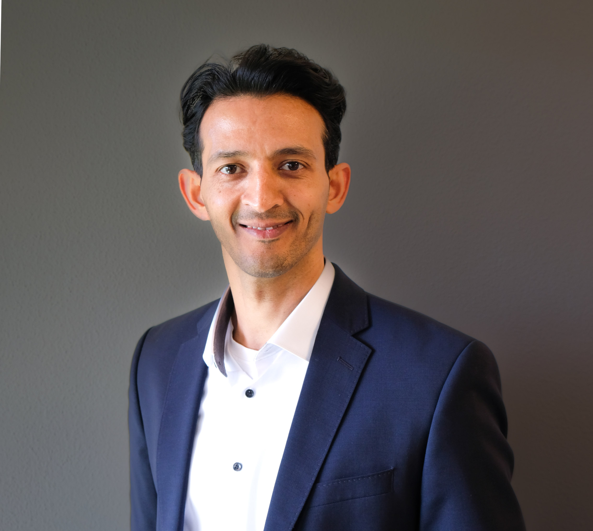

Pradeep Narayan
Technical Product Manager & Product Owner · Cloud, Connected Car & AI
Ingolstadt, Germany
Technical Product Manager with 10+ years of end-to-end ownership across connected car services, cloud-native platforms, and AI/ML applications. Experienced leading cross-functional teams in the VW Group ecosystem and beyond, from embedded in-vehicle software to scalable backend services. Open to Senior Product Owner / Technical PM roles in cloud, data, and AI-driven platforms.
Experience
Senior Product Owner – Smart Charging Services Cariad SE · Jan 2021 – Aug 2025 · Ingolstadt
- Product Owner for 3 business services in the Smart Charging realm across multiple vehicle platforms, with 2 agile cross-functional teams.
- Full ownership of software modules spanning in-vehicle components through to backend services.
- Led VW-group-wide stakeholder collaboration to define customer journeys, business use-cases, and feature roadmaps informed by market studies and competitor analysis.
- Accountable for budgeting, IT-security assessments, data protection (GDPR), open-source compliance, and service transition to production.
- Directed the formation of a new team to manage an expanded portfolio of services.
Technical Project Lead / Product Owner – Connected Car Services Audi AG · Oct 2016 – Dec 2020 · Ingolstadt
- Led a cross-functional team in developing 3 backend RESTful web services from conception to release, supporting vehicles in Europe, China, and other markets — on time and within budget.
- Acted as Subject Matter Expert (SME) for multiple connected backend services: integration into new car series, market rollouts, debugging, and configuration management.
- Drove requirements management, stakeholder alignment across VW brands, architectural decision-making, and technical concept reviews.
- Actively mitigated security threats as part of a technical task force responding to a security incident; supported regular IT-security assessments.
Embedded Software Engineer EXCO GmbH @ Roche Diabetes Care · Sep 2013 – Sep 2016 · Mannheim
- Implemented a C++ display driver for a new display unit on an insulin pump — delivered 3 months ahead of schedule.
- Developed a unified design concept for rendering right-to-left language scripts on medical devices.
- Verified safety-critical embedded software: unit, integration, and system tests for 3 releases across 2 pump series.
Master Thesis / Research Assistant Fraunhofer IESE · Dec 2012 – Aug 2013 · Kaiserslautern
- Thesis: "Design and implementation of a virtual simulation environment for evaluating Conditional Safety Certificates in the Tractor Implement Management IoT domain."
- Developed software for an IoT demonstrator application called "Living Labs."
Application Developer IBM India (Global Business Services) · Dec 2007 – Aug 2010 · Bangalore
- Delivered code and assisted in deployment for 5 major service features and 11+ change requests for a SOAP-based Java web-service application.
- Conducted peer reviews of system design documents and code for 20+ feature updates.
- Reviewed requirements with overseas customers to resolve ambiguity early in the development cycle.
- Fixed critical production bugs across multiple stages of the release pipeline.
Projects
InteractiveCV – RAG-based Resume Assistant Hugging Face · Ongoing
- Built a Retrieval-Augmented Generation (RAG) application on Hugging Face that answers recruiter questions about experience, skills, certifications, and job preferences.
- Embedded directly on this portfolio as an interactive sidebar assistant.
- Try it on Hugging Face →
Lateral Control Strategies for Agricultural Vehicles Robotics Research Lab · TU Kaiserslautern · 2012
- Research project on autonomous lateral control algorithms for agricultural vehicles at TU Kaiserslautern's Robotics Lab.
Skills
Product & Delivery
- IT Project Management
- Agile Methodologies (Scrum, SAFe)
- User Experience & Design Thinking
- Roadmapping, backlog management, stakeholder alignment
- GDPR & compliance management
Cloud & Architecture
- AWS Cloud (S3, Lambda, API Gateway, CloudFront, IAM)
- Cloud-native architectures & microservices
- REST & SOAP Web Services
- CI/CD Pipelines, UML Modelling
- Database: SQL & NoSQL
AI & Data
- Machine Learning, Generative AI
- LLM-based automation & agentic solutions
- RAG applications, vector search, embeddings
- Python for data science & prototyping
Languages
- English – Bilingual proficiency
- German – C1
- Hindi – C1
- Kannada – Native speaker
Programming & Tools
- Python, Java, C++
- Java EE, Java-based Web Services
- Test management: planning, debugging & coordination (ISTQB)
Certifications
-
Machine Learning Specialization
2023 · Coursera / Stanford University
- Supervised ML: Regression & Classification
- Advanced Learning Algorithms
- Unsupervised Learning, Recommenders, Reinforcement Learning
- Udacity Nanodegree – Cloud Developer 2021 · Udacity
- Certified SAFe Product Owner / Product Manager 2020 · Scaled Agile Framework
- AWS Certified Solutions Architect – Associate 2019 · Amazon Web Services
- IPMA – Foundation Level 2019 · International Project Management Association
- Foundation Level Certificate in Software Testing (ISTQB) 2008 · ISTQB
- Sun Certified Java Programmer (SCJP) 1.5 2008 · Sun Microsystems
Education
Master of Science – Commercial Vehicle Technology
Technical University of Kaiserslautern · Kaiserslautern, Germany · 2013
Core subjects: Architecture of Digital Systems, Automotive Software Engineering, Real-time Systems, Vehicle Dynamics & Control, Autonomous Mobile Robots, Vehicle Production.
Bachelor of Engineering – Mechanical Engineering
B.M.S. College of Engineering (VTU) · Bangalore, India · 2007
Get in touch
I'm open to opportunities in product management, technical product ownership, and AI-driven platforms. Feel free to reach out or chat with my Interactive CV assistant on the right.